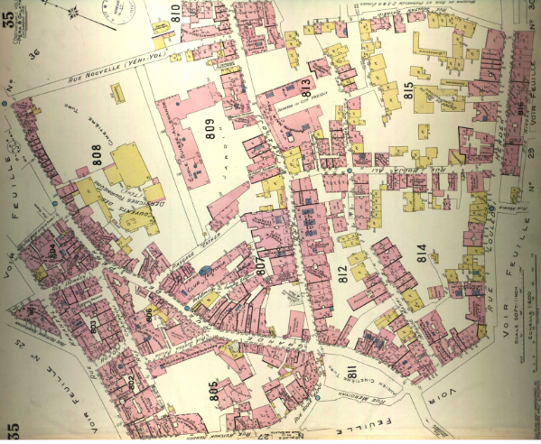

Uluslararası siyaset ve diplomasi tarihini kent mekânlarında keşfetmeye hazır mısınız? Bu proje, Pera bölgesindeki elçilik binalarını tarihi anlatılarla buluşturuyor.
Yürüyüş Rotası Haritasına GitBu proje, uluslararası siyaset ve diplomasi tarihi eğitimi için kent mekânlarını öğrenme alanı olarak kullanan yenilikçi bir metodoloji sunar. Elçilik binalarının hikâyeleri ve dönemin siyasi ilişkileri anlatılarla keşfedilecektir.
Prof. Dr. Umut Azak
Prof. Dr. Demet Irklı Eryıldız,
Prof. Dr. Semih Bilgen,
Fikret Erkut Emcioğlu,
Dr. Seda Altuğ,
Damla Sandal
Eksik olduğunu ya da yanlış olduğunu düşündüğün kısım mı var. Bize bildir!
{kind=link}
{kind=link}
{kind=link}
{kind=link}
{kind=link}
![ Charles Eduard Goad Bu harita, 19. yüzyılın sonlarında veya 20. yüzyılın başlarında İstanbul'un bir bölgesini detaylı bir şekilde göstermektedir. Charles Eduard Goad tarafından hazırlanan bu harita, binaların yapısal özelliklerini, sokak düzenini ve diğer önemli detayları içermektedir. Harita üzerindeki numaralandırmalar ve renk kodları, farklı yapı tiplerini veya kullanım amaçlarını belirtiyor olabilir. Bu tür haritalar, şehir planlaması, tarihi araştırmalar ve kültürel mirasın korunması gibi alanlarda önemli bir kaynak olarak kullanılmaktadır.](assets/img/portfolio/fullsize/6.jpg){kind=link}